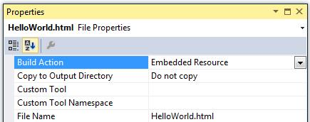

<html>
<body>
<p>Hello World!</p>
</body>
</html>

<html xmlns:concordion="http://www.concordion.org/2007/concordion">
<body>
<p concordion:assertEquals="GetGreeting()">Hello World!</p>
</body>
</html>
folder, create a file
"HelloWorldTest.cs"
containing:
using Concordion.Integration;
namespace Kickstart.Spec.HelloWorld
{
[ConcordionTest]
public class HelloWorldTest
{
private readonly Greeter m_HelloWorldGreeter = new Greeter();
public string GetGreeting()
{
return m_HelloWorldGreeter.GetMessage();
}
}
}
Now run the HelloWorldTest class using NUnit.
If you've done it right, NUnit should give you a green bar and a message like this should be printed to the console:
Processed specifications: C:\Temp\Kickstart\Spec\HelloWorld\HelloWorld.html
Tests run: 1, Errors: 0, Failures: 0, Inconclusive: 0, Time: 0,65 seconds
The message shows a summary of success and failure counts, and the path of the output (results) file for the test. By default, Concordion outputs to the temp directory (e.g. C:\User\<your user>\AppData\Local\Temp = Windows environment variable %TEMP%).
Open the output file in a browser and you should see the same
content as the input document but with the words Hello World!
highlighted in green.
In the example above, the call to "GetGreeting()" can be
simplified to "Greeting" since Concordion's expression language
understands simple properties.
<html xmlns:concordion="http://www.concordion.org/2007/concordion">
<body>
<p concordion:assertEquals="Greeting">Hello World!</p>
</body>
</html>
Please, find further details about the assertEquals command here.